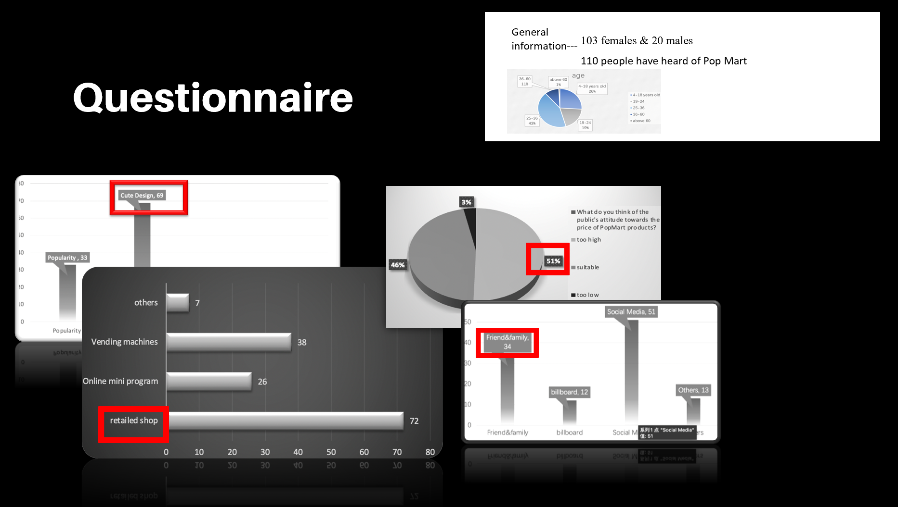
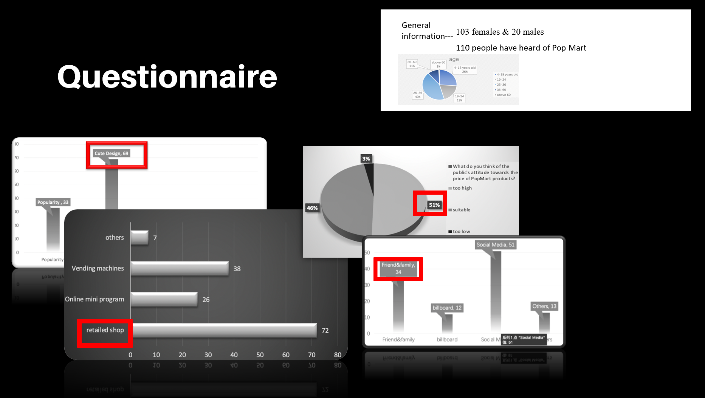

How does the Pop Mart succeed in the toy market by using the marketing strategy ?
Introduction
Nowadays, Pop Mart stands as a global frontier and trailblazer in the toy industry, serving as a brand of entertainment with billions of followers, especially among teenagers. The managing director of China Market Research Group, Shaun Reine, maintains that "Chinese are stressed over long hours but face low pay at work and unaffordable housing prices, so they look for cheap forms of entertainment and purchases”, explaining the driving force behind the explosive growth of Pop Mart (Harper, 2020).
The establishment of this toy brand can be traced back to 2010 when it was founded to sell light industrial goods (Case Study: Toy Story inside Pop Mart’s Blind Boxes-Guanghua School of Management, 2020). However, due to the fierce competition of e-commerce, Wang Ning, who is the brand founder of Pop Mart, began to sell blind boxes, which is a strategic shift, these boxes are designed to have identical exteriors while they are different inside the blind boxes, containing IP toys figures randomly. Unlike other art toys that are expensive to thousands of dollars, Pop Mart’s toys are remarkably affordable, sold at only 59 yuan for young consumers’ entertainment. According to research, the cute design and the affordable price of Pop Mart are especially favored by the millennial generation. The brand experienced a surge in sales in 2016, and its sales revenue reached US$22 million in 2017 and subsequently increased to 73 US million dollar in just one year later, rising by over 230% (South China Morning Post, 2021). This new brand has witnessed the rise of innovative and trendy cultural brands, which can be described as the latest craze in new fashion. Notably, this phenomenon appears to be intricately linked to the firm’s marketing strategies.
This report aimed to figure out Pop Mart’s business position in the toy industry by conducting both primary research and secondary research. Data will be collected from firms’ annual reports in order to analyze their financial performance, while a questionnaire will be distributed to investigate consumers’ preferences for Pop Mart. Secondary research with the method of critical literature review will be conducted to evaluate the firm’s marketing strategy and its competitive standing.
The report will be divided mainly in five sections. The first section of this report provides an understanding of Bubble Mart's current situation by analyzing the financial annual report. The second section takes a look at Pop Mart’s marketing strategies by using the 4P model and looking up relevant information and research online. The third part of the report is to make a questionnaire based on the 4P model for consumers in order to study Pop Mart’s market strategies. The fourth section is to conduct a SWOT model from online resources. Eventually, the fifth section makes a conclusion of the report briefly.
How profitable is Pop Mart’s business?
This section analyzes Pop Mart’s profitability using its annual reports, with profitability indicators including gross profit margin and net profit margin over a five-year period from 2018 to 2022. Besides, this report also compares Pop Mart’s profitability figures with three toy companies that are in the same industry as Pop Mart, including Play Holding Limited, LEGO and Disney.
Firstly, this report uses gross profit margin as the first profitability indicator, which evaluates a firm’s capability to sell its goods and services for more than the cost of producing them. As illustrated in Figure 1, Pop Mart’s gross profit illustrates a slightly upward trend from 2018 to 2019 followed by a minor decline from 2021 to 2022. Compared with Pop Mart, LEGO’s gross profit margins experience dramatic fluctuation during the span of 5 years. To be specific, LEGO’s gross profit shows a relatively low percentage among the per group, and falls continuously from 44.94% to 33% from 2018 to 2022. As for Disney, it is almost higher than the figures of Pop Mart. Disney’s margins remain constant at around 70%, although there is a slight decline from 2021 to 2022. Besides, the gross profit of Pop Mart is much lower than Play Holding Limited company and Disney, ranging between 57.49% to 61.43%. As a result, by comparing Pop Mart’s gross profit margin with the other three comparable firms, Pop Mart is neither the best nor the worst performer.
The second part is about the net profit margin. According to Coucom,( 2018) the net profit margin is the net profit (or net income) earned for every 100 dollars of revenue, and it can illustrate how well the business controls its expenses. The indicator will be influenced by different expenses such as fixed expenses and other variable expenses. As shown in figure 1 above, Pop Mart’s net profit margins for the year from 2018 to 2022 are 19.34%, 26.8%, 20.82%, 19.03% and 10.3%, implying its net profit margins fluctuate around 20% except in 2022 when the margin plummets to 10.3%. In 2018, Pop Mart had a profit margin of 19.34%, indicating the firm could gain 19.34% of retained earnings if no dividend is distributed in the year, which can be put into their capital investment, developing new IP rights, and researching new products. By 2019, the ratio increased rapidly, the highest level in the sample period. However, the data shows a decreasing trend from 2020 to 2022, decreasing from 26.8% to 10.30% dramatically, which illustrates that Pop Mart has a lower gross profit or higher revenue. Besides, the report also compared Pop Mart’s comparable firms in the same toy industry. Playmates Holding company remains relatively unstable, with a plummeting profit margin from 63.83% to -97.42% noticeably between 2019 and 2020. Compared with Pop Mart, the second comparable firm, Disney, also shows an unstable trend because its net profit margin experienced large fluctuations from 2018 to 2022, with lowest ratios reaching as low as -37%, and highest ratios reaching as high as 42.4%. Specifically, after the pandemic of 2020, its profit margin tumbled considerably. As the third comparable firm, Lego’s net profit margin performance was very similar to Pop Mart’s, and it remained relatively stable in the past five years. The year 2020 marks the point at which Lego’s profit margin overtook Pop Mart’s. Hence, in terms of net profit margin, Pop Mart's ratios have been relatively stable and it shows a relatively good performance over the five years.
In conclusion, in terms of the net profit margin, Pop Mart and LEGO have the most stable and highest profitability ratio; the gross profit margin of Pop Mart is much higher than that of LEGO. Except for LEGO, the other three gross profit margin ratios are about 60%. However, there are still some weaknesses in Pop Mart’s business management, for example, the gross profit margin shows a slight decreasing trend from 2019 to 2022.
Unveiling Pop Mart’s Marketing Strategy using the 4P model
Pop Mart’s marketing can be dissected based on the 4P model, which provides valuable insights into how Pop Mart has successfully captured the market in the industry. The following will analyze its marketing strategy in terms of the 4P: product, price, place, and promotion.
Product : diverse range
In terms of the product, it can be divided into 3 steps. Firstly, the company defines a core product position, emphasizing the utilization value. And often, harnessing the power of intellectual property (IP) is a useful way to enhance its value. The second step is to determine the actual product’s attributes, which contain quality, function, design, and brand. Pop Mart fosters diversity by inviting various designers to cater to different consumers’ preferences. For example, they hybrid different kinds of elements in their own product such as making an exclusive Disney co-branded blind box to resonate with those Disney fans. Finally, suppliers extend value beyond the physical products by adding some services to the products. Pop Mart has established a multiple blind box trading platform, a website used for trading second-hand blind boxes. It serves as a marketplace where buyers can make profits by reselling the products (Zhang, 2022).
The brand of Pop Mart’s product is designed exclusively, targeted to a particular group of potential consumers, with 70% being female. (Ma, 2022) shows that the firm’s popular IPs account for a substantial 88.6% of its revenue in 2021, and this figure includes 57.6% from its own IP, internally created and developed by the firm, and 17.2% from its exclusive IP, limited edition products usually by collaborating with other firms like Disney.
The product of Pop Mart’s blind boxes contains two types: ‘hidden’ and ‘normal’. The allure of the blind box is due to its unpredictability, which impulses consumers to purchase repeatedly, known as philatelic consumption. Considering the scarcity of hidden products, consumers become more dependent on the product, which further extends the product life cycle and prevents entry into the declining stage.
While Pop Mart markets convenience goods to attract the most cost-conscious consumers at a relatively low price, Pop Mart also makes special goods such as hidden toys and toys with a larger volume. Those highly valued products with sophisticated workmanship and higher prices are used to serve passionate fans of the brand (Zhang, 2022).
Price : diver pricing strategies for different consumers
Pop Mart employs two ways to set the price. Firstly, they enhance market penetration by selling their new products at relatively lower prices than their competitors. Other IP-designed products, which are favored by famous artists and IP collectors, are usually more expensive up to 1000 RMB. For instance, the price of Bear Brick is set at thousands of RMB due to its unique design and limited-edition figures (Guota, 2021), However, Pop Mart stimulates consumption among young millennials, employing a pricing strategy typically in the range of 59-69 RMB.
The second pricing strategy is market skimming. The company selects some newly designed products such as collective figurines and sets higher prices. The prices often exceed 1000 RMB with beautifully crafted garage kits, to target passionate collectors (Zhang, 2022). This is often based on the product’s unique design and limited-edition offerings to justify its premium pricing.
Moreover, Pop Mart employs a psychological approach, with the product price depending on the value of the product in consumers’ minds (Jin, Ruan, and Wen, 2022) Specifically, Pop Mart sends a few hidden products such as rare toys, and this fosters consumers’ addictive buying due to their gambler's mentality to get the hidden style at a low price. This approach has also inflated the hidden toys’ resale value in the second-hand market, reaching over 1000 RMB compared with its original price of 59 RMB. And this further enhanced their values in consumers’ minds (Jin et al., 2022).
Place : hybrid offline and online channels
Pop Mart adopts a hybrid approach to distribution, using both offline and online channels. The offline channels include retail shops, vending machines, and trendy exhibitions while the online channels include its official website, e-commerce mobile apps, etc. Ma (2022) finds out that Pop Mart’s revenue from offline channel contributed to 47.1% of the total revenue of the year 2021, and the revenue from the online accounted for 41.8%.
Pop Mart boasts vending machines and retail shops in most first and second-tier cities. Besides, by reoperating the retail shops, Pop Mart quickly benefits from the positive scale effect, enjoying the overall lower average cost by increasing the scale of firms, and firms also benefits from giving trade discounts by buying large bulk of goods. Moreover, by building vending machines in the upmarket, consumers are attracted by the blind boxes and impulse buying the merchandise. As a result, Pop Mart can build their brand competitiveness in their business position. Zhang (2022) found that Pop Mart focused on trendy exhibitions, as they invited world-renowned artists and designers to develop more self-IP products and expand brand influence globally.
In terms of the online channel, they built up an official website to advertise. Besides, based on research conducted by (Jin et al., 2022), they use various e-commerce platforms, such as Tmall and Taobao to stimulate consumption and make it easier for customers to buy blind boxes online. Their research (Jin et al., 2022) also shows that Pop Mart’s online sales reached 270 million RMB during the “Double Eleven Festival”, and Pop Mart has occupied the top list for 3 consecutive years, even exceeding the most famous toy brands like Disney and Bandai.
Importantly, Paqu is a social app developed independently by Pop Mart. The consumer can share their experience of collecting the IP figures of Pop Mart by communicating with each other on Paqu, and they can also be the first to hear about the new products. Sharing products and exchanging with others’ second-hand products can further enhance the consumer’s stickiness to the brand.
Promotion : from social media to exhibitions with hunger marketing
In terms of promotion, the firm conducts an e-marketing presence to advertise their product such as via WeChat, TikTok, and Instagram. Considering social media is popular and prevalent among millennials and Generation Z, these potential consumers will be attracted by Pop Mart, which is a social-cultural trendy toy. By 2020 April, Pop Mart boasted 2.187 million fans and approximately 99 thousand fans on Weibo (Jin et al., 2022). Besides, Pop Mart’s independently developed app as mentioned above can send new products on a regular basis, making it more convenient for consumers to access the product online and strengthen the relationship with the brand (Zhang, 2022). The established community in Paqu provides consumers with a sense of belonging and generates the desire for consumers to buy (Jin et al., 2022).
As for offline promotion, Pop Mart has held six international trendy toy exhibitions in Beijing and Shanghai. They invited world-renowned designers and artists, which helped to build more connections between consumers and the brand. The exhibitions invited over 1,000,000 visitors to participate, to dramatically enhance the brand influence (Jin et al., 2022). In February 2022, “The Journey of Art Toys” was held at Expo Dubai. In March 2022, Pop Mart also held a mall exhibition of the theme BUNNY in Singapore creatively (Jin et al., 2022). They also attract overseas audiences by exhibiting the IP figures in the U.S. in November 2021 (Ma, 2022).
Thirdly, they embrace “hunger marketing”, exploiting product scarcity to stimulate consumption. The “hidden + fixed” model is used to encourage the consumer to keep buying as they have a chance of winning the rare style. Once they get the rare one, they will not only receive an emotional value but also set the rare style at a high price position in their minds (Zhang, 2022).
Analysis of questionnaire
To further analyze Pop Mart’s marketing strategy by using the 4P model, this report conducts a questionnaire to investigate consumer preference for Pop Mart. The report contains 123 original samples, including demographic information and consumer preference analysis.
The demographic parts record the survey respondent’s basic information including gender, age, and income. There are more female respondents than male respondents, with 103 females and 20 males. As for age, nearly half (43.09%) of the respondents are between 25 and 36 years old, while only 11% of them are over 35 years old. For the rest, 26% of people are between 4 and 18 years old, and 20% are between the age of 19 to 24, indicating that young people are in the majority.
For the respondent’s income, including allowance, rent income, pension, etc., among the 123 respondents, their income distribution can be divided into two parts. The vast majority of respondents have a monthly income of over 5,000 RMB, and the rest of them have income lower than 5000 RMB. Among 123 respondents, 31 of them have 10000-20000 RMB income, which occupied over 25%. Besides, only 7% of people have 500-1000 income per month.

Besides, among the original sample of 123 respondents, the research found that 110 people had heard the brand of Pop Mart, and 93 of them had purchased Pop Mart. Out of the 110 people who had heard of Pop Mart, 31 % of them knew about Pop Mart from families and friends, showing the brand is conveyed by word of mouth to some extent. Moreover, 46.36% of them learned about the brand from social media, meaning social media is the most effective advertising method for Pop Mart as brand communication, given the fact that it is a trendy toy brand. 11% of them started recognizing the brand from billboards and the rest of them know Pop Mart from other sources such as offline retail stores in malls or maybe they're veterans of trendy toys themselves.
According to the questionnaire, among those people who heard of Pop Mart but have not purchased it, 3 of them think they are too expensive to purchase; 5 people feel Pop Mart is not useful enough in practical life; and 9 subjects thought Pop Mart’s product was too boring, which will lead to overconsumption.
However, as for those subjects who once bought Pop Mart’s products, most of the answers (69) show they favored Pop Mart’s cute design, including its IP rights and detailed design, as shown in figure 6 (and it is notable here that this is a question allowing for multiple choices). This also exactly corresponds to the product of the four P model — Pop Mart is strengthened in its IP image and special appearance. However, the least of the subjects have made the purchase decisions because of other factors, such as its peripherals, and co-branded products. Besides, 33 choices have been made on Pop Mart because of its popularity while 13 answers reflect that the purchase decision was made because of brand loyalty.
Linking to the place element of the four P model, this report also investigates how consumers have bought Pop Mart’s products, with choices including vending machines, retail shops (offline), and online mini-programs, as demonstrated in figure 7. Again, here it is still possible to click multiple choices. The questionnaire reflects that the most effective way to distribute Pop Mart’s products is through retail shops, with 72 times being chosen; and surprisingly, given the rapid trend of online purchases, the method of buying Pop Mart’s products through online mini-program has been chosen least, with only 26 times. And the method of vending machines as a way to buy the products has been chosen 38 times.
As for linking the price element to the four P model, Pop Mart’s marketing strategy in price is also unique. According to respondents’ feedback, over half (51%) of the consumers believe the Pop Mart sets the price which is too high, while nearly half (46%) of the consumers think the price is appropriate. These results demonstrate Pop Mart indeed overestimates its own value to some extent. Only 3% of people thought Pop Mart’s price, which is between 59 to 69 RMB approximately, is too low.
Finally, research has also been conducted on consumer satisfaction, showing that 94% of the subjects are generally satisfied with the product, with 29% being satisfied and 65% being moderately satisfied. And 6% of the subjects have expressed their unsatisfied attitudes towards the product. This evidently shows that Pop Mart did a well-structured business management, but they still have sufficient room to improve its brand image. As mentioned above, among people who have bought the Pop Mart, 48 people recommend this brand while 45 people do not recommend this brand. It indicates that Pop Mart’s marketing strategy needs to be improved in the long run by making strong connections with its consumers.
Pop Mart’s SWOT model
This section assesses the position of Pop Mart using the SWOT model, including strengths, weaknesses, opportunities, and threats relatively.
Strength
The strength of Pop Mart includes net profit margin, its popularity as an IP brand, its marketing strategy, consumer targeting, and its economic theory
By analyzing Pop Mart’s financial positions with its competitors, the research has found that Pop Mart’s net profit margin performs well among four companies, including DISNEY, LEGO, and play holding limited company. Its profit margin is relatively high and stable as it provides a diverse range of price settings, including market skimming and low prices.
Secondly, Pop Mart has built its own popularity globally with exclusive IP, leading the way for toy brands around the world. According to Whiddington (2021), in 2020, Pop Mart’s IP brand Molly became the most popular IP, generating over 15.2 million dollars in revenue. It also widens the recognition by inviting world-renowned artists to their public exhibitions. Besides, in order to further enlarge the scale of business, Pop Mart has opened over 300 retail shops in different countries such as Korea, Japan, and Singapore, and they also placed over 2000 automatic robot machines as well as online programs (News & Chen, 2021).
Thirdly, they also implement the marketing strategy by setting up a robot shop, given the fact that some potential consumers can be “socially phobic”, and are not willing to connect with the salespersons. Hence, the robot shop, which can be used to trade blind boxes automatically, can meet the needs of those people who have social phobia. Apart from this, Pop Mart’s robot machines are usually placed in high-traffic areas such as shopping street interactions (Jian, 2022).
Moreover, the strength of Pop Mart can be interpreted by the inherent of consumer and product basis with the behavioral economic theory. The potential consumers of Pop Mart are mainly the Z generation, who are more influenced by the Internet and modern developments and are more in search of spiritual fulfillment than materialistic needs (Ma, 2022). Zhang and Zhang (2022) maintain that “The younger generation, who like to pursue novelty and excitement, becomes the main consumer and the traditional consumption culture changes in China.” As a result, Pop Mart attracts consumers by providing spiritual entertainment with the cute design of IP products. For example, the Molly IP has characteristic green eyes and blonde hair. Additionally, the behavioral economics theory of prospect theory, which was proposed by Daniel Kahneman and Amos Tversky in 1979, has illustrated a high probability that people indulged in the possible events in certain situations, explaining the analysis of decisions under risks (Smith, Wilby & Zasheva, 2021). The theory explains people are more willing to take risks in the reward while they will avert loss. This prospect theory explains how Pop Mart applies to real-life business strategies effectively. For example, people will be eager to draw the hidden product so they will continue to buy the product because they prefer to take risks in reward; people will also keep buying Pop Mart because they prefer to minimize risk in losses by hoping to draw the valuable and rare product (Jian, 2022).
Weakness
From the previous study in the questionnaire, the research has shown that Pop Mart has several weaknesses. As mentioned above, over 50% of respondents reflected that they not will recommend Pop Mart in the future and the advertisement of the billboard is ineffective because only 10% of respondents knew the brand of Pop Mart through a billboard.
Although Pop Mart has a successful achievement in business as stated by Feng and Wang (2020), “Pop Mart’s success makes them higher risk tomorrow.” As a toy brand, its value lacks utilization and only attracts consumers with the exterior design, so satisfaction will decrease dramatically because of the diminishing return of utilization, which is the measure of happiness or satisfaction. Hence, the marginal utility will reach the consumer equilibrium by buying less of the Pop Mart, which then leads to a drop in popularity (Jian, 2022). The research by Feng and Wang (2020) has shown the revenue growth rate of robot machines has declined from 157% to -9% each year on average, and the implication on robot machines has reached in plateau evidently.
Besides, another drawback of Pop Mart is that the product has a relatively low consumer stickiness. Pop Mart only relies on its designed appearance, lacking the culture of its essence. To be specific, Pop Mart does not operate the entire storyline of each characteristic IP. Although it can reach success in the short term through its exclusive design and marketing strategy, the long-term value of the product will be used up by consumers because there is a weak relationship between customers and IP, failing to provide clients long-term emotional experiences and affairs (Ma, 2022). In contrast, the toy brand of Disney, which also owns hundreds of classic IPs such as Cinderella and Aladdin, have developed unshakeable loyalty among customers because of the storyline.
Opportunities
Firstly, the company of Pop Mart benefits from the stable economic development in China (Ma, 2022). The Chinese government also supports new industries and businesses by taking several measures, for example, the tax break on cultural business sets such as Pop Mart in order to raise citizens’ cultural confidence. Besides, they also set a lot of funds to provide financial assistance to Pop Mart (Jin, Ruan & Wen, 2022).
Besides, during the economic globalization, Pop Mart has captured the opportunity to trade with other countries such as Japan, and the United States (Ma, 2022). In addition, the transparency of Pop Mart helps them to access the global toy market. With the steady revenue growth of Pop Mart overseas, a rough international worldwide business center was established in 2018, including the international strategic planning department, the international marketing department, and the international business department. In 2020, the foreign business center which is controlled by headquarters, was improved dramatically (Jin, Ruan and Wen, 2022).
Based on the above research with the 4P model, Pop Mart has also captured the trend that young teenagers prefer nowadays. To be specific, in fast-paced city life, mental relief on spirit is significant for those who are stressed from overloaded work. Hence, they have the opportunity to catch up with the trend and further develop their brand based on mental healing.
Threat
The main threat of Pop Mart is its price setting. While it sets a relatively low price compared to its competitors, 50% of consumers still think Pop Mart’s products too expensive, as shown above in the questionnaire part. Additionally, the data from the annual report shows that although Pop Mart's gross profit was stable from 2018 to 2022, it only got second-to-last numbers, showing Pop Mart’s marketing strategy and product have no significant improvement in this period.
Apart from these, Pop Mart is also facing the threat of its peer competitors. Some companies can copy Pop Mart’s products and make some knockoff products, which not only affect Pop Mart’s brand image but also their potential consumer. Hence, this illegal business merchant will be a potential threat in the long term (Jin, Ruan & Wen, 2022). Additionally, Pop Mart has a strong opponent ——TOP-TOY, which also provides the consumer with seven core categories of toys such as doll models, Japanese manga figures, and building blocks. TOP-TOY also uses the product differentiation strategy, which is to extend the range of the product price from 39 yuan to tens of thousands of yuan, spreading out the risks to a large extent.
Pop Mart also faces the threat of bottlenecks, which means the consumers overstate its value at its stage and feel uninspired about Pop Mart’s gambling strategy. As Pop Mart lack a storyline of IP to inspire consumers in the long run, Jin, Ruan, and Wen (2022) have shown that they are facing falling stock, with lower market capitalization from HK 147.1 billion to only HK 31.9 billion in July 2022. In addition, the government also takes measures to restrict the Pop Mart industry because speculators also hype up the scarce type of Pop Mart to sky-price. The evidence clearly illustrates that Pop Mart is facing some threats due to its product mechanism.
Conclusion
This report has conducted research on Pop Mart by using the 4P model to analyze its marketing strategy in detail, and it also uses the annual reports to analyze its financial situation compared to its competitors. Besides, questionnaires have been distributed to investigate consumers’ preferences and attitudes toward Pop Marts. Lastly, the SWOT model has been utilized in order to further anticipate Pop Mart’s strengths and weaknesses in the long term.
Since Pop Mart uses marketing strategy through promotion, products and places, behavior economic theory, and clear consumer targeting, it has performed well by showing a steady net profit margin in the past five years. However, there are still some weaknesses and threats including its high price setting, intense peer competitors, and lacks of storylines. Hence, Pop Mart is present in the public in a healthy form, which is popular and prevalent among consumers so far, but it still faces a lot of potential challenges in the long run.
There are still some limitations regarding this research. Firstly, as for the content, there is still insufficient evidence to anticipate Pop Mart’s future trend in the long term, and there is still no answer about Pop Mart’s absolute position because the toy brand industry and its peer competitors will change over time. In addition, there is relatively confounding information collected from secondary research and primary research. For instance, there is negative feedback about Pop Mart’s price by collecting subjects’ price attitudes while there are strengths mentioned in reference to Pop Mart’s price advantage. Besides, the sample size in the questionnaire may not be sufficiently large to make an unbiased conclusion. To be specific, there are only more than a hundred samples in this questionnaire and around 13 sample answers are irrelevant. Additionally, the major problem is the gender imbalance, with only 20 males and around 103 females participating in the questionnaire.
As mentioned above, there are some suggestions and perspectives about the future research of Pop Mart and its Pop Toy industry. The report shows that research on a particular brand needs to be conducted in the long run, including the complex procedure to observe, analyze, and evaluate the Pop Mart. We cannot be particularly accurate in assessing Pop Mart’s business position because we can never be sure of the extent of future risk, but we can predict the brand's general future trends. Besides, in future research, the scholar can also evaluate the magnitude of the conflict between consumers and secondary resources in terms of Pop Mart’s price advantages and disadvantages. Moreover, future studies can put emphasis on Pop Mart’s unique marketing, analyzing their effectiveness and feasibility by using accurate participation models and large, comprehensive sample answers.
 
